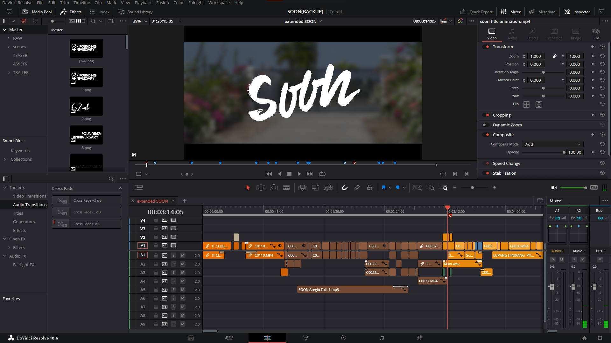

Video editing allows me to edit film videos to tell a story.
In technical side, it also helps me to learn color grading, the quality of the audio, and what scoring should I use
Want to learn more about video editing? Check out these Video Editing Tutorial by Direk Ryan Audendcial!
My favorite project is a Short Film "SOON" for Don Ramon E. Costales Memorial National High School IT Club
